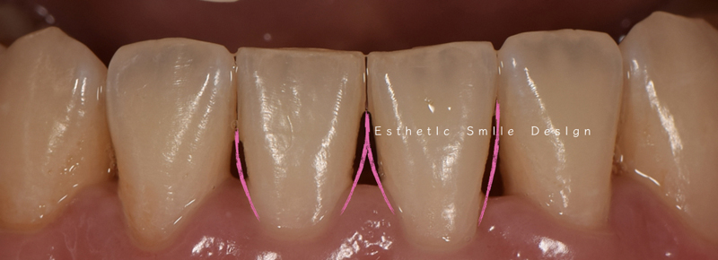
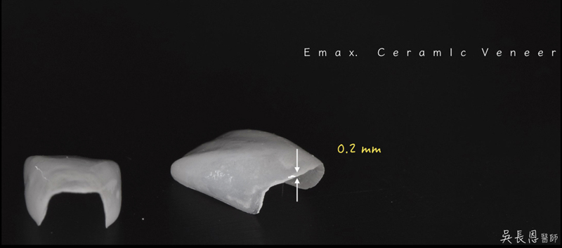
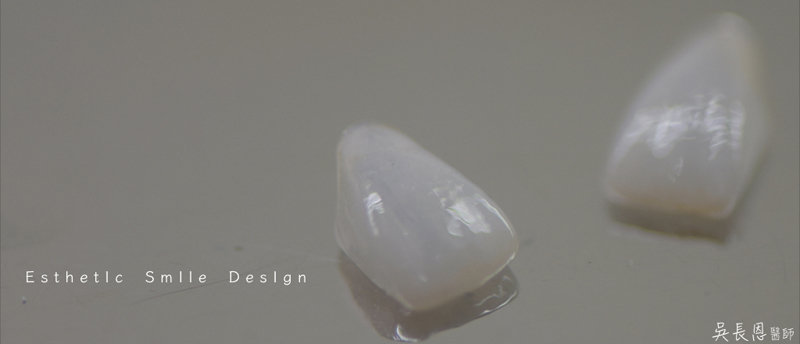
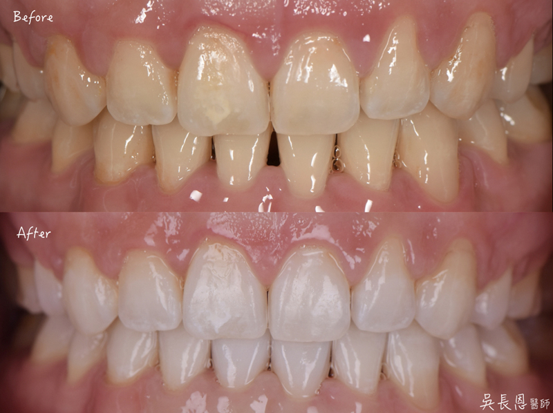
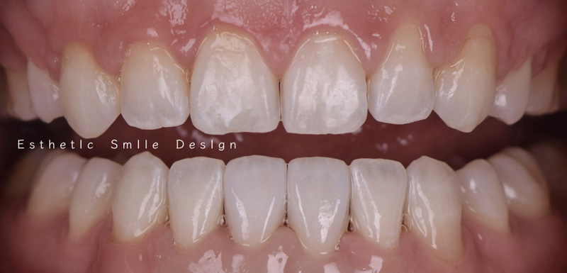

▲矯正後，下排牙齒因牙肉萎縮產生黑三角，同時想要讓牙齒變白
文章重點

牙齒矯正後，通常會遇到一些困擾
下顎牙齒在重新排列後，牙肉萎縮
造成黑三角出現
可以選擇樹脂補牙，或是陶瓷貼片覆蓋
但樹脂補牙的問題
常常是
因為角度問題 器械無法確實深入拋光
時間久了後表面因粗糙容易卡食物而堆積顏色
因此若預算足夠
可以考慮陶瓷貼片來換取長期美觀與乾淨

▲使用兩個陶瓷貼片來關閉70%空間，並做冷光美白
我們治療計劃
希望製作4顆貼片 這樣寬度調整彈性較大
可平均分散到每顆寬度
但因為考量預算 只製作了兩顆陶瓷貼片
所以不讓陶瓷貼片形狀太寬不美觀下
我們以關閉70%空間為目標

我們製作的貼片以保留最大齒質為目標
貼片厚度僅僅 0.2 - 0.5 mm
需要在顯微鏡下修磨
並與技術高超的技師配合
在能達到如此薄度

冷光美白後 並裝上貼片後
牙齒顏色大幅度變白
並且關閉了擾人的空隙


對比前後如下
不用再擔心笑起來有空隙出現
笑容更加迷人潔白